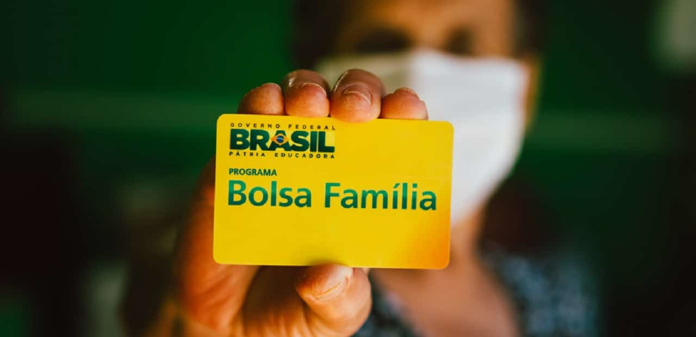

O Real Digital é uma Central Bank Digital Currency (CBDC), uma moeda digital emitida e regulada pelo Banco Central, mas que representa o valor do real. Diferente de criptomoedas tradicionais como o Bitcoin ou Ethereum, a CBDC brasileira não tem volatilidade, pois é atrelada diretamente ao real. Com isso, o Real Digital combina a segurança de uma moeda fiduciária com as vantagens tecnológicas e operacionais das transações digitais.
Diferentemente das criptomoedas que operam em redes descentralizadas, o Real Digital é emitido e controlado pelo Banco Central, utilizando a tecnologia blockchain para registrar todas as transações com segurança e transparência. Esta infraestrutura digital permitirá que o BC acompanhe o fluxo da moeda, ajudando a prevenir crimes financeiros e aumentar o controle que o BC terá sobre suas transações. A moeda digital é projetada para ser usada em transações do dia a dia, semelhante ao pix.
O Banco Central, ao lançar o Real Digital, pode impactar beneficiários do Bolsa Família ao possibilitar um controle mais direto sobre o uso dos recursos. Com a moeda digital, o governo poderia monitorar transações e, eventualmente, definir regras para o uso do benefício, assegurando que o dinheiro seja empregado nas necessidades básicas, como alimentação e saúde. No entanto, há preocupações sobre privacidade e o nível de controle que o governo poderá exercer sobre o uso desses recursos.
Uma das maiores preocupações com o lançamento de uma moeda digital centralizada é a segurança e a privacidade dos usuários. Segundo o Banco Central, o Real Digital foi desenvolvido com protocolos rigorosos de segurança cibernética, incorporando criptografia de ponta para proteger os dados dos usuários e garantir que as transações sejam confidenciais.
A privacidade, no entanto, será um desafio a ser equilibrado. De um lado, o Banco Central afirma que não poderá monitorar as transações de indivíduos em detalhes, mantendo a privacidade dos usuários. Do outro, o BC contará com mecanismos que auxiliam na detecção de movimentações "suspeitas".
A adoção do Real Digital traz inúmeras vantagens para o Brasil. Primeiramente, ele visa aumentar a eficiência do sistema de pagamentos, tornando as transações mais rápidas, seguras e baratas. Segundo o BC, a moeda digital pode ajudar a reduzir o uso de dinheiro físico, diminuindo os custos de impressão e transporte de cédulas.
Outro benefício é a inclusão financeira. Com o Real Digital, o BC espera alcançar brasileiros que atualmente não têm acesso a serviços bancários. O Real Digital poderá ser utilizado mesmo em celulares sem conexão constante à internet, garantindo acessibilidade.
No entanto, a moeda digital também apresenta desafios. A resistência ao novo formato de moeda pode ser um obstáculo entre os brasileiros que ainda preferem o dinheiro físico, além da necessidade de adaptar-se ao uso de uma plataforma digital.
O Banco Central anunciou que o Real Digital será disponibilizado de forma gradual, com uma fase de testes iniciais focada em um grupo selecionado de instituições financeiras. A expectativa é de que o Real Digital seja plenamente implementado nos próximos anos, após os testes e ajustes necessários. No entanto, os consumidores já podem esperar que, em um futuro próximo, poderão optar pelo uso da nova moeda digital para realizar transações cotidianas.